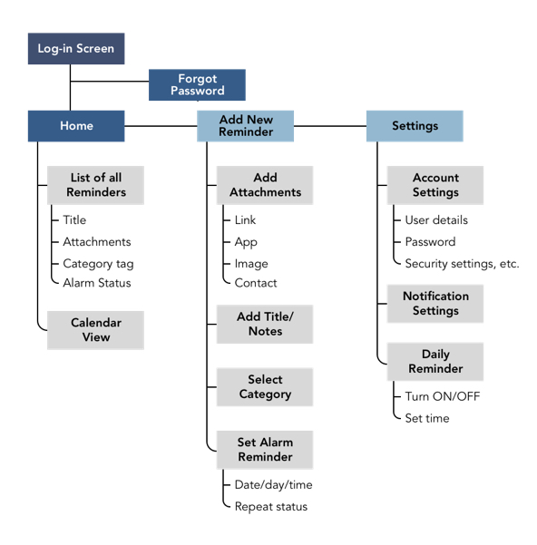
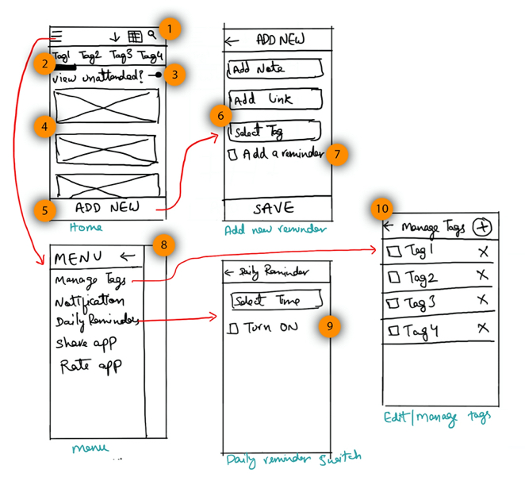

Slink Reminder App
Platform(s)
Native Android App
Duration
2 months including development
Tools
Sketch, Photoshop, Zeplin
Methods
Competetive Analysis, User Interviews, Wireframing, Product Flow, Sitemap, Usability Testing, UI Design
Skim Through
Everything highlighted in orange is an important conclusion contributing to the final design decision
The Idea
The app empowers you to take charge over things you wish to remember in your subconscious mind. So the link you copy-paste in your notes does actually get accessed later and doesn’t rot there for the stars to get aligned.
So the idea is simple as that, save links with a reminder attached to it. A good example can be, “Remind me to read the online science journal at 9am on sunday.” or “Remind me to pay the wi-fi bill on 31st of every month.”
Presets
The app will function only locally on a device
There won't be a log-in option in this version of the app
Hence, there won't be any cross-platform syncing functionality.
Functional Requirements
To be able to add, edit, view or delete a reminder
To be able to attach a link to the reminder
The tagged entity should open upon tapping the reminder notification
To be able to organise the reminders using tags and based on read/unread status
To be able to get a daily reminder notifying all pending tasks.
Research & Elicitation
Methods
Competetive Analysis (Pocket App & few others on PlayStore)
User Interviews with 3 people (2 males & a female)
Usability Testing.
Conclusions: Competetive Analysis
Keep the main task in focus
And make it visible. User should be able to get to the task right away. The point that Pocket needs a lot of description to teach its users how to use the app is sign of bad design
A good understanding from Pocket: Slink needs to allow cross-platform syncing in the future for better user experience.
Conclusions: User Interviews
There is a low-to-moderate demand for reminder apps
Students generally are on their phones and hence prefer phones to save reminders
Working professionals on the other hand, prefer desktop to save their tasks
There is the need for the product to be functional cross-platform and cross-OS
Having the tasks in a calendar view is beneficial for the users
Every user has different way of sorting/tagging reminders, the app should be flexible to cater all types of users
Users generally would not want to share their tasks with others.
Key Hypothesis
User
Age: Around 15 to 40, both genders, occupation: students, working professionals, entrepreneurs / businessmen, part-timers from home; education: high-schoolers to post grads, moderate-to-high tech savviness.
Goal
To add reminders with an attachment with minimum required steps.
Tasks
Initiate addition > enter task text > attach link > set reminder time > Finish
Tools
The product will be mobile app-first for this phase. The extension of the product can be via browser extensions and home screen widgets.
Environment
Mostly indoors, but in haste - hence the process for the goal should be shorter.
Product Flow

All the important functional features & thier position in the product flow
Site-map
Product architecture
Low-fidelity Wireframes
Initial Ideas for the interface design
1 - The nav bar on the home page allows the user to access menu, sort the reminders & perform search.
2 - Segmented view to sort reminders based on tags.
3 - A switch to view unattended reminders only.
4 - A lit view of all the reminders.
5 - An upfront button to save a new reminder.
6 - On the Add New screen, the user enters the three required inputs - notes, link & tag.
7 - Users can save links without a reminder. Setting a time is optional.
8 - The menu screen allows the user to access more features.
9 - The daily reminder feature allows the user to set a time of day for when s/he wants to be notified with all the pending reminders.
10 - Manage tags means the user can edit, rename & clear the tags & reminders set under it.
How do we sort the reminders?
Problem
We had to figure out a way to help the users sort their reminders in an efficient manner. One of the biggest hurdles we faced was to design this for all types of users. This means that the system needed to be flexible & customisable enough for everyone to make use of it.
Solution
Color labels. Colored labels have been in our society for a long time and provide a great way for the users to sort their notes. We can immitate the colored sticky labels used as a stationery.